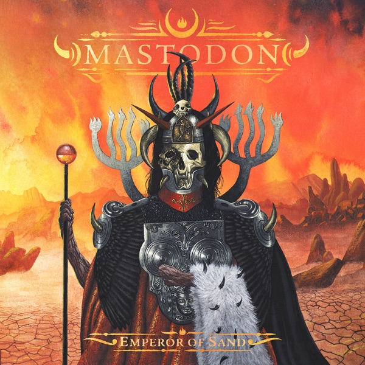

Mastodon – Emperor of Sand
Introduction
As a massive Mastodon fan, it’s no surprise that I adore Emperor of Sand. But even within the band’s discography, this album holds a special place in my heart, surpassing some others for reasons I’m excited to share.
Why I Love It
I spent 20 years living in a scorching hot climate (imagine wearing shorts in mid-January in the Northern Hemisphere) and another year in a similarly sweltering place. For me, Emperor of Sand perfectly embodies the desert heat and atmosphere. Whenever the weather gets unbearably hot, this is the album I instinctively reach for.
The desert vibes are brilliantly captured throughout the record. Take the guitar solo at the start of Steambreather; it feels like seeing a mirage—beautiful, deceptive, and surreal. The intro of Scorpion Breath immediately conjures the image of a scorpion darting across the sand, and the eerie guitar effects in quieter moments create a heat-haze ambiance. The atmosphere practically pulls the heat from your body and replaces it with something cinematic and vast.
Addressing Common Criticisms
While Emperor of Sand enjoys decent rankings on some metal-focused sites, it hasn’t been as warmly received by more prominent platforms like theneedledrop, Metal Trenches, and RYM, where it’s often ranked as Mastodon’s weakest album.
One common criticism I’ve encountered is that the riffs aren’t as compelling as those in Mastodon’s earlier works. Though the guitars don’t dominate the mix, there are hidden gems waiting to be uncovered. The swinging, heavy verse riff in Roots Remain and the captivating outro riff in Steambreather are standout examples that showcase Mastodon’s craftsmanship
In fact, Steambreather is packed with incredible riffs. The main riff is irresistibly groovy, and the chorus riff ranks among Mastodon’s best (not great as Divinations though). These riffs may require a bit of digging to appreciate because they’re subtly layered within the production.
Rather than having weak mixing, the album’s layered approach focuses on vocals and percussion. The slightly muddy sound is a nod to Mastodon’s sludge metal roots and seems intentional.
Some have noted similarities between the riff in and Ministry’s Psalm 69, but I find Bill Kelliher’s Midas touch elevates it into something fresh and captivating.
Show Yourself
Show Yourself is perhaps the most common criticism aimed at Emperor of Sand. I admit it feels like an unnecessarily radio-friendly track—almost like a Queens of the Stone Age B-side or something off Arctic Monkeys’ Humbug. While the second half gains some momentum and becomes slightly more engaging, it remains one of my least favourite Mastodon songs. That said, it’s not unbearable and doesn’t occupy enough of the album’s runtime to detract from the overall experience.
There are other complaints as well: the music not being heavy enough, an overabundance of vocals, and Brann Dailor’s increased vocal contributions. While I understand these arguments, I simply disagree. For me, this album feels like a Long Island road trip soundtrack—a record to sing out loud to and a captivating journey from start to finish.
Brann Dailor’s Spectacular Drumming
While I wouldn’t call myself a professional drummer, I’ve been playing drums for quite some time. Listening to drumming in music is one of my favourite pastimes, and Emperor of Sand is a treasure trove for percussion enthusiasts.
Brann Dailor’s work here is nothing short of spectacular. The drum patterns are intricate and dynamic, while the additional percussion layers add an extra dimension to the album. In fact, I believe an Emperor of Sand drum-and-percussion-only mix would still be an incredibly engaging listen.
Dailor’s ability to seamlessly blend rhythmic precision with chaotic, unrelenting drumming sets him apart as one of the most captivating drummers in the genre. With access to producer Brendan O'Brien's extensive collection of percussive instruments, his performance adds a cinematic depth to the music, creating moments of profound emotion. For instance, the triangle solo in the second half of "Roots Remain" offers a delicate, ethereal contrast to the track’s intensity. On Jaguar God, the use of odd time signatures in the percussion mirrors the song’s progressive shifts, introducing transcendent layers that reveal more with each listen.
In Ancient Kingdom, Dailor’s drumming takes on the form of a relentless hailstorm, flowing chaotically through the track with an endless barrage of drum fills. It’s a perfect example of his ability to combine technical skill with raw power.
Musical Approach
From the Turkish moon and star on the band’s logo to the cover art and the opening track’s title, you might anticipate a heavy Middle Eastern influence on this album. However, you might also find yourself slightly disappointed. While the album doesn’t feature overtly Middle Eastern sounds—such as the use of traditional instruments like the bağlama or oud, or an arabesque style—it still incorporates subtle Middle Eastern influences in its atmosphere and composition.
The melodic bridge in Word to the Wise carries the essence of an uzun hava bağlama performance, reimagined through Mastodon’s distinct sound and style. Similarly, the chorus in "Andromeda", though distant from overt Middle Eastern instrumentation, subtly incorporates arabesque-inspired scales, bridging global influences with Mastodon’s progressive metal roots. The bridge in "Scorpion’s Breath" crackles with an intensity akin to that of Word to the Wise, weaving threads of atmospheric tension into Mastodon’s metal framework
Emotional Impact
Confession time: I wasn’t initially captivated by Emperor of Sand. That changed on an unremarkable day that unexpectedly became deeply personal. I had lost a distant acquaintance to cancer—not someone I was particularly close to, but the fact that he was so young made it feel grim. As I walked to an unavoidable destination in the stifling heat of summer, I decided to give the album a listen. I played it twice, back to back—and it hit me. The album’s themes of mortality and resilience mirrored the moment, offering solace in a way I hadn’t anticipated. Tracks like Roots Remain and Jaguar God stood out, their lyrics resonating with a bittersweet finality that felt both deeply personal and universally relatable. Even now, these lines bring me back to that moment:
"And when you sit and picture me
Remember sitting in the sun and dancing in the rain
The end is not the end, you see
It's just the recognition of a memory"
What started as an ordinary album became a profound reflection on loss and endurance—something that feels as personal as grief itself.
Final Thoughts
Emperor of Sand is more than just another Mastodon album—it’s a journey through themes of survival, loss, and resilience. Its layered sound and emotional depth make it a unique listening experience, even if it doesn’t cater to everyone’s expectations. For those willing to dive in, this album offers something special that grows with every listen. Put on your headphones, step into the heat, and let Emperor of Sand take you on a journey.
Favourite Tracks: Sultan's Curse, Steambreather, Roots Remain, Jaguar God
Rating: 9/10